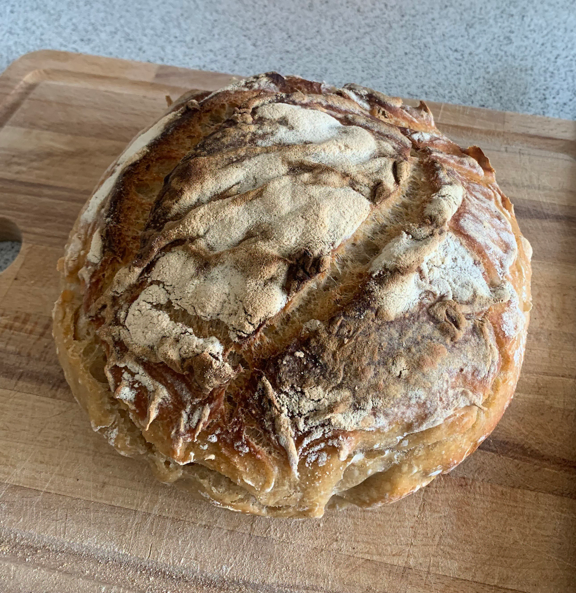

Surdejsbrød opskrift
Ingredienser:
- 340 g vand (lunt)
- 100 g aktiv surdej
- 500 g hvedemel
- 10 g salt

Fremgangsmåde:
Forbered Surdejen: Sørg for, at din surdej er aktiv. "Fodre" den 4-8 timer før, du bager, så den er boblende og klar til brug.
- I en stor skål blandes ingredienserne sammen. Jeg synes personligt at det er lettest at hælde surdejen og mel i først, og så vand og salt oven på det, da vandet med det samme suger ned i melet. Rør indtil dejen er sammenblandet og gerne lidt elastisk.
- Nu kan du bare lade den stå i 4-6 timer, men du kan også efter en halv time, hvis du er hjemme, lave det såkaldte stretch and fold. Jeg vil klart anbefale at kigge på youtube, da der findes en del videoer med forskellige metoder. Men det er bare at hive dejen fra et hjørne, op og ind mod midten, og gentage det ca. 4 gange. Her vil du hurtigt mærke dejen blive mere sammenhængede.
- Dæk herfeter dejen med et fugtigt klæde, og lad den hæve ved stuetemperatur i 4-6 timer, eller indtil den er fordoblet i størrelse.
- Efter første hævning, kommes dejen ud på et meldrrysset eller vådt bord (du kan bare spraye med lidt vand, eller hælde lidt ud på bordet), og så skal dejen "hives" ud til en firkant på bordet. Så foldes det ind så det bliver til en stram bolle (her kan jeg også anbefale youtube videoer om hvordan man gør det).
- Læg dejen i en meldrysset hævekurv (og her vil jeg uden tvivl anbefale rismel! det er en kæmpe game changer) eller en skål. Dæk den til og lad den hæve i 1-2 timer, eller i køleskabet i op til 12 timer for en langsom hævning, som også fjerner mere af den syrlige gærsmag, hvis man ikke synes så meget om det.
- Forvarm ovnen og bageplade eller bagestål til 230°C varmluft.
- Vend dejen ud på en bagepapirbeklædt plade. Skær et snit i toppen for at give dampen plads.
- Bag i 25 minutter med damp. Her kan man enten stille et fad med vand ind, eller bruge en sprayflaske når du sætter brødet ind. Efter 25 minutter, så fjernes fadet, og så bages det i 20-25 minutter, eller indtil brødet er gyldent og lyder hult, når du banker på bunden.
- Brødet skal ideelt køle af inden man skærer det ud, men jeg kan sjældent selv vente.